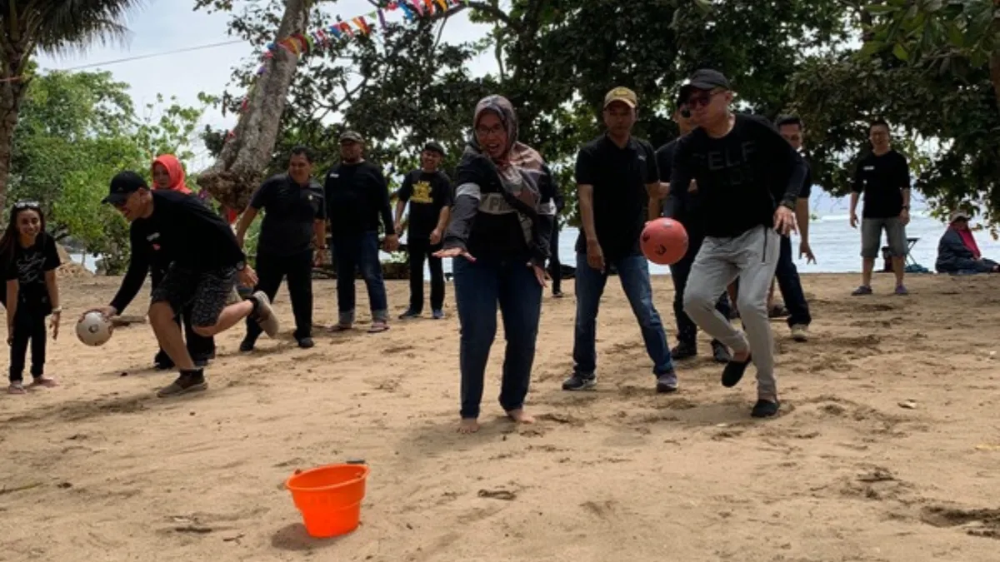

Apa yang Membuat Tug of War di Pasir Berbeda dari Versi Biasa
Tug of war di pasir berbeda dari versi lapangan karena permukaan pasir yang tidak rata membuat pijakan peserta lebih menantang, sehingga games terasa lebih dinamis dan seru dibanding di permukaan keras.
Beberapa perbedaan yang umum dirasakan saat bermain di pasir antara lain:
- Pijakan kaki lebih tidak stabil dibanding di lapangan rumput atau aspal.
- Faktor kelelahan lebih cepat terasa karena tekstur pasir yang lebih berat untuk melangkah.
- Suasana pantai menambah unsur keseruan tersendiri dibanding lokasi indoor atau lapangan biasa.
- Risiko cedera ringan seperti terpeleset perlu diantisipasi lebih awal oleh panitia.
Perbedaan ini membuat tug of war di pasir terasa seperti pengalaman baru meski konsep dasarnya sama dengan tarik tambang pada umumnya, sehingga tetap menarik dimainkan meskipun sudah dikenal luas sebagai games klasik.
Mengapa Tug of War di Pasir Masih Relevan untuk Outbound Kantor
Tug of war di pasir masih relevan untuk outbound kantor karena aturan mainnya mudah dipahami tanpa instruksi rumit, sehingga semua peserta dapat langsung ikut tanpa persiapan khusus.
Beberapa alasan games ini tetap dipilih dalam acara outbound antara lain:
- Tidak membutuhkan keterampilan khusus, sehingga inklusif untuk berbagai peserta.
- Waktu persiapan relatif singkat dibanding games dengan alat pendukung kompleks.
- Cocok dijadikan sesi kompetisi antar divisi dengan sistem gugur sederhana.
- Momen tarik-menarik menciptakan kekompakan yang terasa langsung oleh peserta.
Kesederhanaan games ini justru menjadi kekuatan utamanya, karena panitia tidak perlu menyiapkan peralatan rumit, sementara peserta tetap mendapatkan pengalaman seru dan kompetitif dalam suasana pantai yang santai.

Bagaimana Cara Menyusun Sesi Tug of War di Pasir agar Aman dan Seru
Cara menyusun sesi tug of war di pasir agar aman dan seru adalah dengan mengatur pembagian tim yang seimbang, menyiapkan area bermain yang jelas, serta memperhatikan aspek keselamatan peserta.
Beberapa langkah yang dapat dilakukan panitia acara antara lain:
- Membagi peserta ke dalam tim dengan jumlah dan proporsi tenaga yang relatif seimbang.
- Menentukan batas area bermain yang jelas agar tidak mengganggu aktivitas lain di pantai.
- Menyediakan tali yang cukup kuat dan aman digunakan untuk banyak peserta.
- Memberikan instruksi singkat mengenai posisi tangan dan cara menarik yang aman.
- Menyiapkan area istirahat setelah sesi karena games ini cukup menguras tenaga.
"Tug of war di pasir tetap menjadi pilihan relevan untuk outbound pantai karena kesederhanaan aturan main, sifatnya yang inklusif, serta manfaatnya dalam membangun kekompakan tim."
Bagaimana Tug of War Membantu Membangun Kekompakan Tim
Tug of war membantu membangun kekompakan tim karena keberhasilan dalam games ini sangat bergantung pada koordinasi dan kekompakan gerakan seluruh anggota tim, bukan kekuatan individu semata.
- Kebutuhan menyamakan ritme tarikan agar tenaga tim tersalurkan maksimal.
- Komunikasi singkat antar anggota untuk menentukan strategi menarik.
- Rasa saling percaya karena hasil akhir bergantung pada kerja sama seluruh tim.
- Semangat kolektif yang muncul saat tim berhasil memenangkan sesi tarik tambang.
Kesimpulan
Tug of war di pasir tetap menjadi pilihan relevan untuk outbound pantai karena kesederhanaan aturan main, sifatnya yang inklusif, serta manfaatnya dalam membangun kekompakan tim. Panitia acara perlu memperhatikan pembagian tim yang seimbang dan aspek keselamatan agar sesi ini berjalan aman sekaligus tetap seru untuk semua peserta.